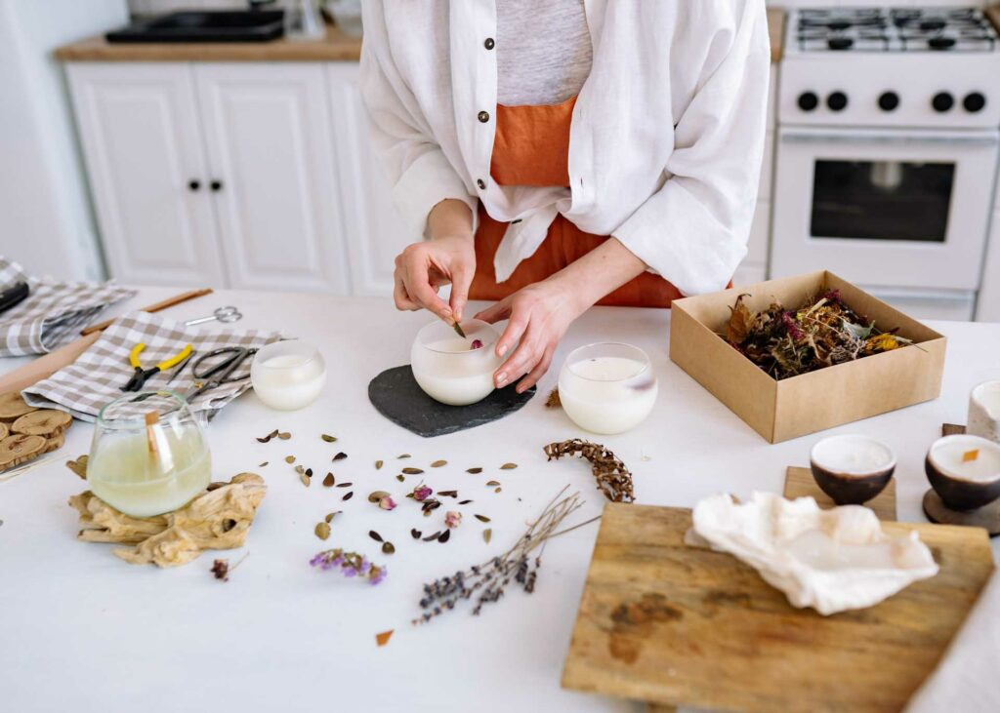

Candle Castle
Sobre nosotros
Mi nombre es Rebecca, soy una joven oriunda de la ciudad de Buenos Aires. Siempre he sido una apasionada de las
velas y el arte de crear ambientes relajantes.
Un día mientras disfrutaba de una tarde tranquila en el balcón de
mi departamento, encendí una vela de soja y la suave fragancia me cautivó, así se sembró en mí la idea de crear
mi propio emprendimiento de velas de soja.
Quería ofrecer algo único y especial para mis clientes. Investigué profundamente sobre las velas de soja y
descubrí que eran una alternativa ecológica y sostenible a las velas tradicionales, ya que estaban hechas de
cera de soja, una materia prima biodegradable y renovable.
Comencé a experimentar en mi pequeño laboratorio casero, mezclando diferentes fragancias naturales y aprendiendo
sobre la técnica de la fabricación de velas de soja. Después de muchos intentos, finalmente logré crear unas
velas que no solo olían delicioso, sino que también ardían de manera limpia y uniforme.
Luego de perfeccionar mi producto, el siguiente paso fue diseñar envases y etiquetas que reflejaran la esencia
de mis velas de soja: naturaleza, tranquilidad y elegancia. Decidí utilizar envases reciclables y me
aseguré de que todo el proceso de producción fuera amigable con el medio ambiente.
Con mis velas listas para ser presentadas al mundo, creé mi propio e-commerce y una página de redes sociales
para
mi marca, que decidí llamar "Candle Castle". Compartí mi historia, el proceso de fabricación y la inspiración
detrás de cada fragancia. Poco a poco, las personas comenzaron a interesarse en mi emprendimiento y las primeras
ventas llegaron.
Para expandir mi negocio, participé en mercados locales y ferias de artesanía, donde pude interactuar
directamente con los clientes y recibir valiosos comentarios sobre las velas. La calidad y el cariño que ponía
en cada producto empezaron a hacerse notar, y el boca a boca comenzó a generar una creciente base de clientes
leales.
El éxito de "Candle Castle" se debió no solo a la alta calidad de sus productos, sino también al hecho de que
siempre me mantuve fiel a mis valores y principios. Además de ofrecer productos ecológicos, también donaba un
porcentaje de las ganancias a organizaciones benéficas que se dedicaban a la reforestación y la conservación del
medio ambiente.